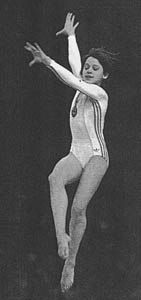

Tatiana Arzhannikova (USSR)
1978 World Team Gold Medalist

Medal Total
World Championships: 1 Gold
Tatiana was born November 20, 1964 in the Belorussian city of Vitebsk. She learned the fundamentals of gymnastics from children's coach Elena Kovalyova. Her trainer was Vikenty Dmitriev, who also coached Larissa Petrik and Tamara Lazakovich. Tatiana was a member of the 1978 and 1981 USSR World Championships teams (in 1981 she was the alternate). Today, she still lives in Vitebsk and is the director of the sports school where she used to train.
Competition Results
1976
All-Union Youth Sports Games (Candidate for Master of Sport): 2nd AA
Jr. USSR Championships (Candidate for Master of Sport): 2nd AA
1977
Dynamo Championships: 2nd Team, 2nd AA, 2nd FX, 3rd UB, 3rd B
Jr. Friendship Tournament (Druzhba): 1st Team, 2nd AA, 1st B, 2nd V,
2nd FX
Jr. GDR-USSR Dual Meet: 1st Team, 2nd AA
Jr. HUN-USSR Dual Meet: 1st Team, 2nd AA, 1st B, 2nd V, 2nd UB
Jr. USSR Championships: 1st Team, 1st AA, 1st UB
Simo Sappinen Memorial International: 1st AA
1978
Antibes International: 2nd AA
Coca Cola International: 3rd AA
Jr. European Championships: 3rd AA, 2nd V, 2nd UB, 2nd FX, 4th B
Kosice International: 2nd AA, 1st V, 1st UB
Orleans International: 1st AA
USSR Championsihps: 2nd AA, 3rd B, 4th V
USSR-GDR Dual Meet: 1st Team, 3rd AA
USSR Schoolchildren's Spartakiad: 2nd Team, 3rd AA, 1st B
World Championships: 1st Team, 8th AA (prelims)
1979
Pre-Olympics/USSR Spartakiade: 2nd AA, 4th V
USSR Championships: 4th AA, 5th B, 6th V, 6th UB, 7th FX
USSR Cup: 9th AA
1980
USSR Cup: 11th AA
1981
Belarussian Championships: 2nd AA, 1st UB
Dinamo Spartakiade: 1st Team, 2nd AA
Schoolchildren's Spartakiade: 6th Team, 6th V
USSR Championships: 7th AA, 3rd B, 4th FX
USSR Cup: 9th (compulsories)
1982
Golden Sands International: 4th AA
USSR Championships: 18th AA (preliminaries)
USSR Cup: 17th AA, 4th FX
1983
Belarus Athletes Newspaper Competition: 3rd AA
Belarus Spartakiad: 4th AA
Dinamo Championships: 2nd AA
Medico Cup: 2nd AA
USSR Spartakiad: 3rd Team
This page was created on December
17, 2000 and was last updated on August 20, 2026.
© Gymn Forum